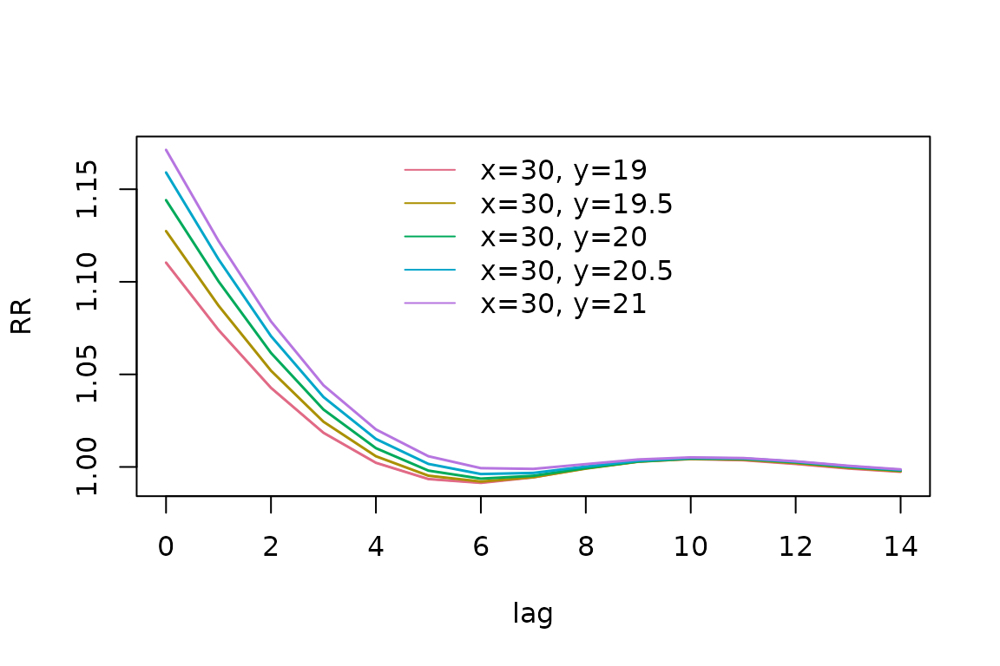
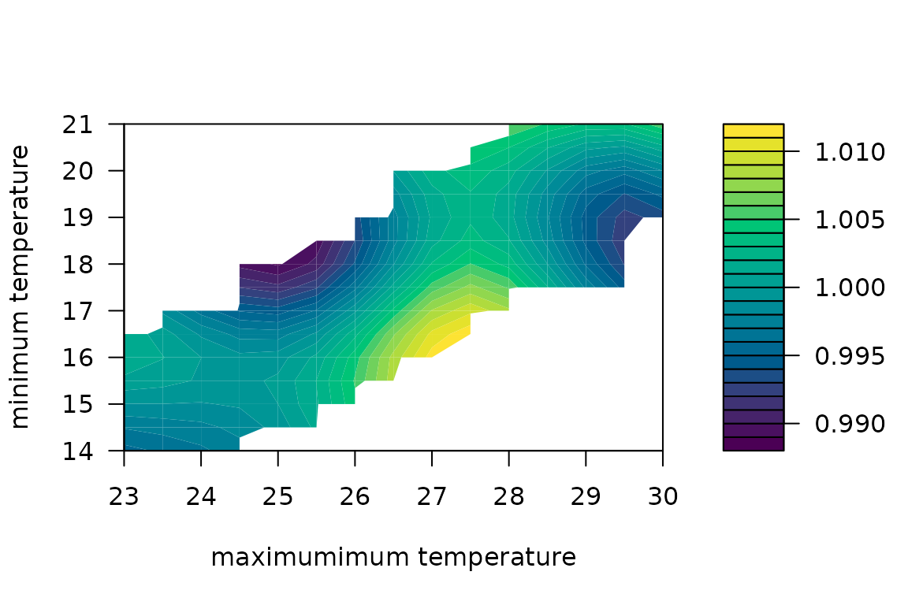
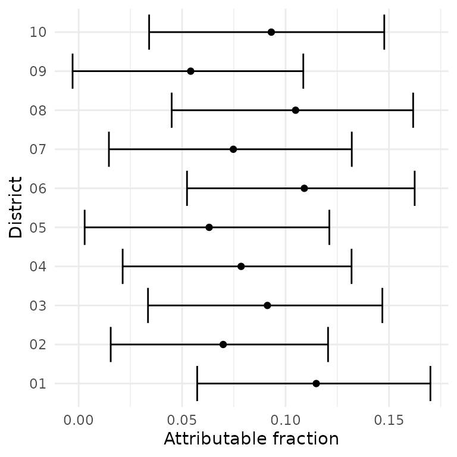

Bivariate (joint) DLNMs
joint-dlnms.RmdIntroduction
Traditionally, distributed lag non-linear models (DLNMs) are used to model the effect of one, possibly delayed and non-linear exposure on an outcome. However, interest might be in the joint effect of two (bivariate) exposures. For example, the effect of maximum and minimum temperature on mortality might be synergistic, requiring a joint modelling strategy.
dlnmLPS provides methods for modelling the delayed and
non-linear effect of two exposures jointly (Rutten et al. 2024). In this vignette, we
demonstrate how to fit and visualize these bivariate DLNMs using the
dlnmLPS framework.
The basic functionality of dlnmLPS is introduced in
vignette("introduction_dlnmlps").
Joint DLNMs
Example data
For illustration, we use the following simulated example data:
# Example data
data(barcelona_temp)This simulated dataset contains daily minimum, maximum and mean temperature in all 10 districts of Barcelona during the summer period (1 June–30 September) between 2007 and 2011. The population size, deprivation index and daily number of deaths are included for every district. For this example, we will investigate how maximum and minimum temperatures jointly impact mortality. The outcome and exposure variable can then be inspected:
# Inspect the data
head(barcelona_temp)
#> date Tmax Tmin Tmean District pop depriv dtot
#> 1 2007-06-01 25.85997 17.93684 21.89841 01 659845.8 1.188957 26
#> 2 2007-06-02 25.71266 17.21590 21.46428 01 659845.8 1.188957 27
#> 3 2007-06-03 25.33624 16.95453 21.14538 01 659845.8 1.188957 23
#> 4 2007-06-04 25.47256 15.42090 20.44673 01 659845.8 1.188957 23
#> 5 2007-06-05 23.89031 16.21367 20.05199 01 659845.8 1.188957 26
#> 6 2007-06-06 24.08012 16.47465 20.27739 01 659845.8 1.188957 18We can extract some additional information from the date such as the day of the week, year and month.
Fitting an additive DLNM
While fitting a joint DLNM requires an extension of the basic functionality of DLNMs, fitting a model with an additive DLNM of maximum and minimum temperatures is straightforward.
We include month as natural splines with 3 degrees of freedom, year as a random walk of order one, day of the week as a factor and District as an (independent) random effect. Fitting a penalized additive DLNM, using 8 degrees of freedom and a penalty of order 2, can be done as follows:
# Fit a penalized additive DLNM
group <- factor(paste0(dataset$District, "-", dataset$year))
basis.max_pen <- dlnm::crossbasis(
dataset$Tmax,
argvar = list(fun = "ps", df = 8),
arglag = list(fun = "ps", df = 8),
lag = 14,
group = group
)
basis.min_pen <- dlnm::crossbasis(
dataset$Tmin,
argvar = list(fun = "ps", df = 8),
arglag = list(fun = "ps", df = 8),
lag = 14,
group = group
)
model_additive <- dlnmLPS(dtot ~ factor(dow) +
sm(basis.max_pen, arg = list(pen = 2)) +
sm(basis.min_pen, arg = list(pen = 2)) +
sm(month, arg = list(type = "ns", df = 3)) +
sm(year, arg = list(type = "rw1")) +
sm(District, arg = list(type = "ind")),
data = dataset,
offset = log(pop),
model.comparison = list(DIC = TRUE, WAIC = TRUE, CPO = TRUE),
family = "Poisson")Fitting a joint DLNM
Fitting a joint DLNM is very similar to fitting a traditional DLNM.
However, since the dlnm package does not directly provide
the functionality to specify a joint crossbasis, the function
joint.crossbasis() of the dlnmLPS package
should be used instead. This function is very similar to the
dlnm::crossbasis() function, requiring arguments for both
exposure variables as well as the lag. The data can be supplied as a
matrix for which the first and second column contain the timeseries of
the first and second exposure respectively.
Fitting an unpenalized version of the model can be done through:
# Fit an unpenalized joint DLNM
knots_max <- quantile(dataset$Tmax, probs = c(0.10,0.50,0.90))
knots_min <- quantile(dataset$Tmin, probs = c(0.10,0.50,0.90))
knots_lag <- dlnm::logknots(0:14, nk = 2)
joint.basis <- joint.crossbasis(
cbind(dataset$Tmax, dataset$Tmin),
argvar1 = list(fun = "ns", knots = knots_max),
argvar2 = list(fun = "ns", knots = knots_min),
arglag = list(fun = "ns", knots = knots_lag),
lag = 14,
group = group
)
model_unpenalized <- dlnmLPS(dtot ~ factor(dow) +
sm(joint.basis) +
sm(month, arg = list(type = "ns", df = 3)) +
sm(year, arg = list(type = "rw1")) +
sm(District, arg = list(type = "ind")),
data = dataset,
offset = log(pop),
model.comparison = list(DIC = TRUE, WAIC = TRUE, CPO = TRUE),
family = "Poisson")Similarly, a penalized version of the DLNM, using 8 degrees of freedom and a second order penalty, can be fitted using:
# Fit a penalized joint DLNM
joint.basis_pen <- joint.crossbasis(
cbind(dataset$Tmax, dataset$Tmin),
argvar1 = list(fun = "ps", df = 8),
argvar2 = list(fun = "ps", df = 8),
arglag = list(fun = "ps", df = 8),
lag = 14,
group = group
)
model_penalized <- dlnmLPS(dtot ~ factor(dow) +
sm(joint.basis_pen, arg = list(pen = 2)) +
sm(month, arg = list(type = "ns", df = 3)) +
sm(year, arg = list(type = "rw1")) +
sm(District, arg = list(type = "ind")),
data = dataset,
offset = log(pop),
model.comparison = list(DIC = TRUE, WAIC = TRUE, CPO = TRUE),
family = "Poisson")To visualize this model, we need a grid of realistic maximum and
minimum temperature combinations. A prediction is made for every
at_x-at_y pair, rather than for cross-pairs.
This also implies that the length of both vectors should be equal. A
centering value now consists of a vector containing the reference value
for both the first and the second exposure. Predictions can then be made
and exceedance probabilities can be requested, using:
# Realistic maximum - minimum temperature data frame
df = data.frame()
k=1
for (i in seq(23,30,by=0.5)){
lower_i = min(barcelona_temp$Tmin[barcelona_temp$Tmax<i+0.25 & barcelona_temp$Tmax>i-0.25])
upper_i = max(barcelona_temp$Tmin[barcelona_temp$Tmax<i+0.25 & barcelona_temp$Tmax>i-0.25])
for (j in seq(14,21,by=0.5)){
if (j<upper_i & j>lower_i){
df[k,1] = i
df[k,2] = j
k=k+1
}
}
}
colnames(df)=c("x","y")
# Predict RR
pred_penalized <- pred_crossbasis(
basis = joint.basis_pen,
model = model_penalized,
at_x = df$x,
at_y = df$y,
cen = c(25,15),
lag = c(0,14),
CI = TRUE,
exc.prob = TRUE
)We can again extract specific predictions of interest using
extract_predictions(). For example, if we want to extract
the lag-specific RRs at the first three x and
y combinations, we can use:
extract_predictions(pred_penalized, slice_x = df$x[1:3], slice_y = df$y[1:3], ptype = "allRRfit")
#> x y fit lower upper exc.prob
#> [1,] 23 14.0 0.9535109 0.8644771 1.051715 0.1705951
#> [2,] 23 14.5 0.9647697 0.8742339 1.064682 0.2378110
#> [3,] 23 15.0 0.9815117 0.8827394 1.091336 0.3651059A contour plot and 3D plot of the overall cumulative RR can be made:
contour(pred_penalized, ptype = "overall", xlab = "maximum temperature", ylab = "minimum temperature")
plot(pred_penalized, ptype = "overall", ticktype="detailed",theta=230,
xlab = "maximum", ylab = "minimum", zlab = "RR",
ltheta=200,phi=30,lphi=30,
nticks = 4, shade = 0.75,r=sqrt(3),d=5,cex.axis=0.5, cex.lab=0.8,border=NA)The plots seem to suggest that both maximum and minimum temperature are important when estimating RRs. We can for example also visualize the lag relationship for specific exposure levels:
plot(pred_penalized, slice_x = rep(30, sum(pred_penalized$x == 30)),
slice_y = pred_penalized$y[pred_penalized$x == 30], ptype = "slices")
or the exposures-outcome relationship for the immediate risk (lag = 0):
contour(pred_penalized, slice_lag = 0, xlab = "maximum temperature", ylab = "minimum temperature",
ptype = "slices")and risk after five days:
contour(pred_penalized, slice_lag = 5, xlab = "maximum temperature", ylab = "minimum temperature",
ptype = "slices")
The attributable fraction in 2007 can also be calculated for example. We make use of the district-specific maximum and minimum temperature timeseries and of the backward perspective:
# Calculate exposure and outcome timeseries
data2007_district <- dataset |>
dplyr::filter(year == 2007) |>
dplyr::arrange(District, date)
# Calculate attributable risk
af2007_district <- attributable_risk(
basis = joint.basis_pen,
cases = data2007_district$dtot,
model = model_penalized,
cen = c(25,15),
x = data2007_district$Tmax,
y = data2007_district$Tmin,
group = data2007_district$District,
dir = "back",
tot = TRUE,
samples = TRUE)These results could then be visualized as:
# Extract results
af_ci <- dplyr::bind_rows(lapply(seq_along(af2007_district$samples), function(i) {
x <- af2007_district$samples[[i]]
data.frame(
ID = x$ID[1],
estimate = af2007_district$fit[[i]]$af,
lower = quantile(x$af, 0.025, na.rm = TRUE),
upper = quantile(x$af, 0.975, na.rm = TRUE)
)
}))
# Visualize results
ggplot2::ggplot(af_ci, ggplot2::aes(x = estimate, y = ID)) +
ggplot2::geom_errorbar(ggplot2::aes(xmin = lower, xmax = upper), orientation = "y") +
ggplot2::geom_point() +
ggplot2::labs(x = "Attributable fraction", y = "District") +
ggplot2::theme_minimal()
Fitting a spatial and effect modified joint DLNM
Just as for traditional DLNMs, a joint DLNM can be spatially varying
or subject to effect modification (see
vignette("spatially-varying-dlnms") and
vignette("effect-modified-dlnms") for more information).
The syntax remains exactly the same as for the univariate DLNM.
Summary
In this vignette, we introduced the joint modelling functionality of
dlnmLPS. We demonstrated how to fit and visualize these
models. For more information, see also
vignette("introduction_dlnmlps"),
vignette("spatially-varying-dlnms") and
vignette("effect-modified-dlnms").